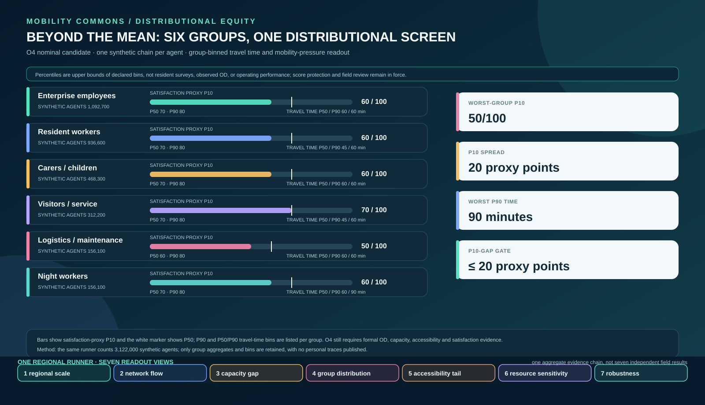
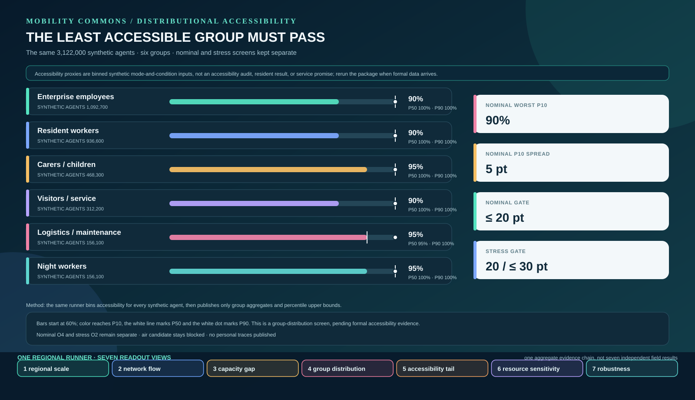
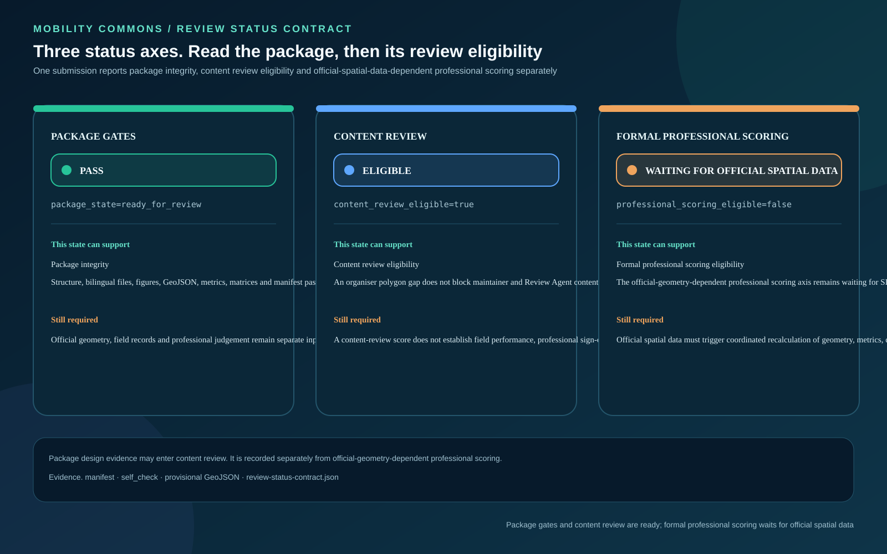
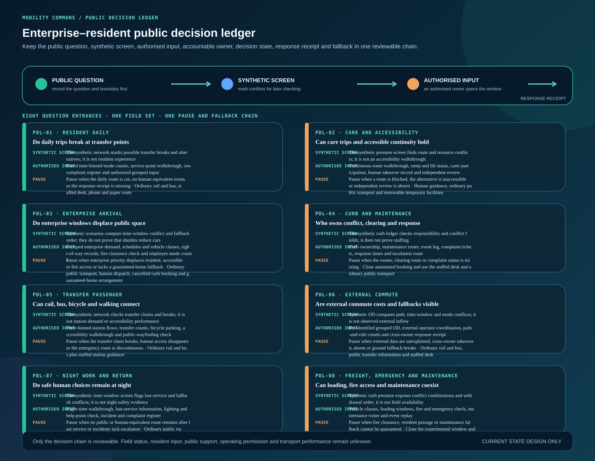

Distributional equity and accessibility tail
SYNTHETIC SCREENThe same regional runner bins synthetic per-agent travel time, satisfaction and accessibility proxies by six groups. Under O4, the logistics/maintenance group has a satisfaction-proxy P10 of 50/100, night workers have a P90 travel-time bin of 90 minutes, the group P10 spread is 20 proxy points and the accessibility-proxy P10 spread is 5 proxy points. The nominal accessibility gate is 20 points and the stress gate is 30 points. P10 keeps the lower tail visible beside the overall mean; these are synthetic screen outputs, not resident experience, a resident accessibility walk-through, an accessibility audit or operating performance.


Accessibility tail and lowest-group gate
SYNTHETIC SCREENThe same runner bins accessibility proxies for six synthetic groups at P10, P50 and P90. The nominal O4 accessibility-proxy P10 spread is 5 proxy points against a 20-point gate; under severe-weather stress O2 is 20 proxy points against a 30-point stress gate. This is a synthetic sufficiency screen, not a resident accessibility walk-through, an accessibility audit or an operating promise.
Three status axes. Package, content review and formal professional eligibility
STATUS CONTRACTThis board separates package_state, content review eligibility and official-spatial-data-dependent professional scoring. `content_review_eligible=true` means an organiser polygon gap does not block content review; `professional_scoring_eligible=false` keeps official SITE_BOUNDARY and KEY_AREA polygons as prerequisites for that formal scoring axis. Maintainers may record a Review Agent intake score on the content-review axis; that score remains separate from official-spatial-data-dependent professional scoring.

One synthetic resident journey. Outbound, disruption, return and complaint replay
SYNTHETIC REPLAYZhou Lan is a synthetic carer. She obtains a paper, telephone or staffed route at the AI Origin Community desk, follows the accessible segment to Dazhongsi and keeps a staffed transfer; snow, outage or curb conflict freezes the booking and returns service to human support and ground public transport. The return and complaint entry must also exist before departure.

Calibration debt and parameter provenance
INPUT BOUNDARY234 mode, service-unit, mode-weight and synthetic-population fields are registered one by one. Every field is agent_proposed or design_target, observed_count=0 and field_status=not_authorized_not_run. The board shows declared inputs, method references and the field calibration still required; it does not present synthetic values as field results.

Enterprise and resident public decision ledger
PUBLIC INPUT BOUNDARYEight question entrances connect a public question, synthetic screen, authorised input, accountable owner, response receipt, appeal, pause and fallback. Field and consent status remain not_authorized_not_run, and the board does not represent resident support, public consensus or operating permission.
